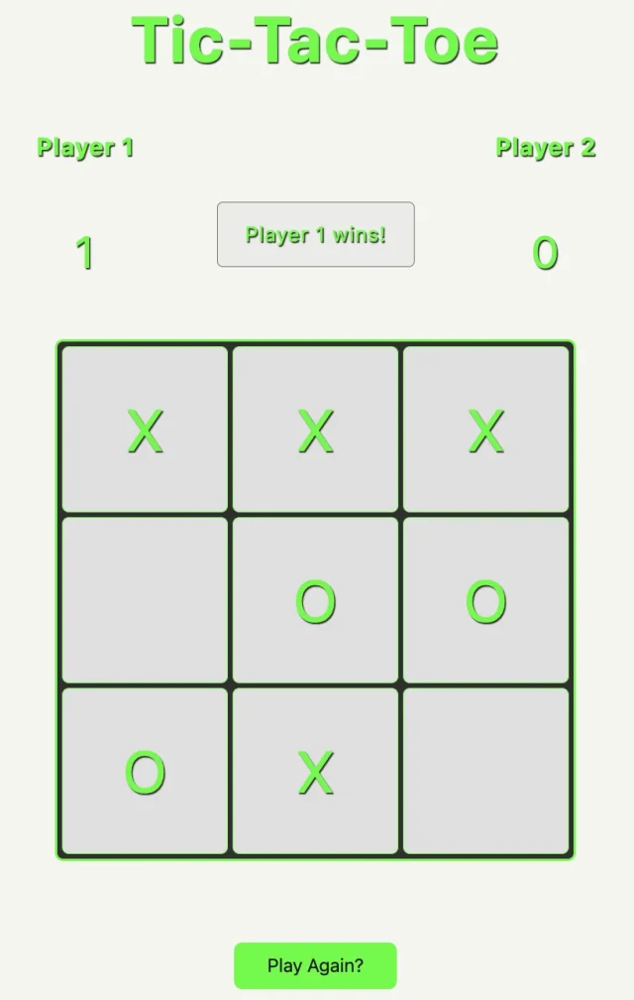

Game state
A nine-cell board, alternating turns, player scores, and replay state stay synchronized with the interface.
JavaScript learning project
Two players. Nine squares. One small exercise in state.
I built this simple browser game to practice organizing JavaScript behavior, tracking application state, and turning game rules into a responsive interface.

What I practiced
The scope stayed intentionally small, leaving room to focus on the behavior behind every move.
A nine-cell board, alternating turns, player scores, and replay state stay synchronized with the interface.
Rows, columns, and diagonals are evaluated after every move to identify wins and draws.
Players can rename themselves, play across screen sizes, restart rounds, and operate the board by keyboard.
The game loop
A small learning project
Edit the player names, claim a square, and try to connect three.